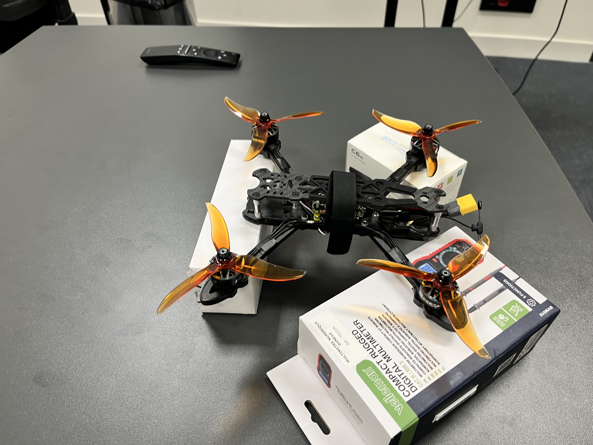
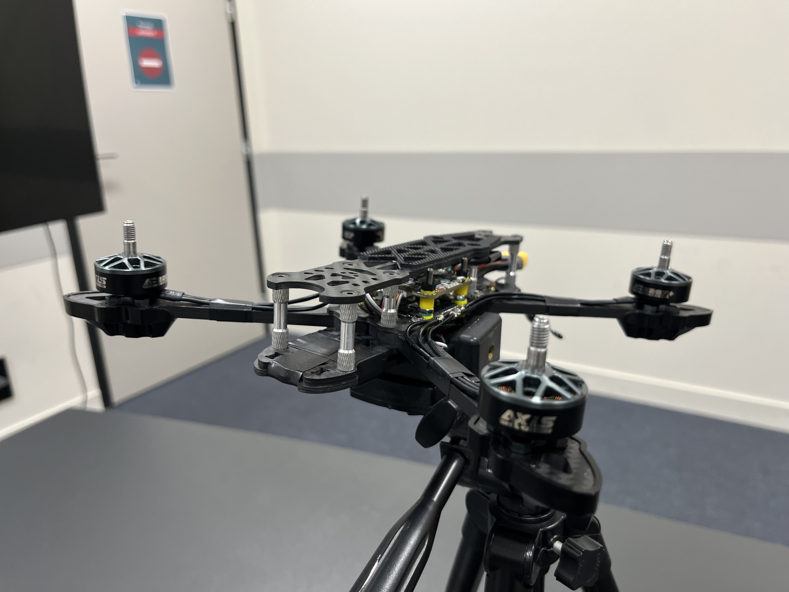
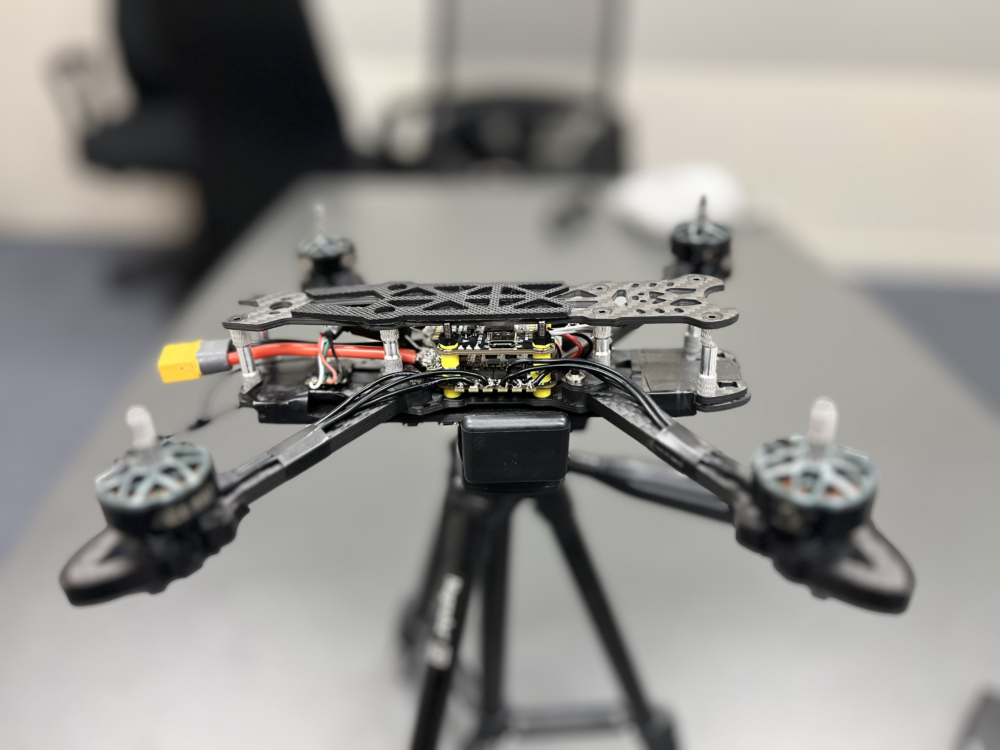
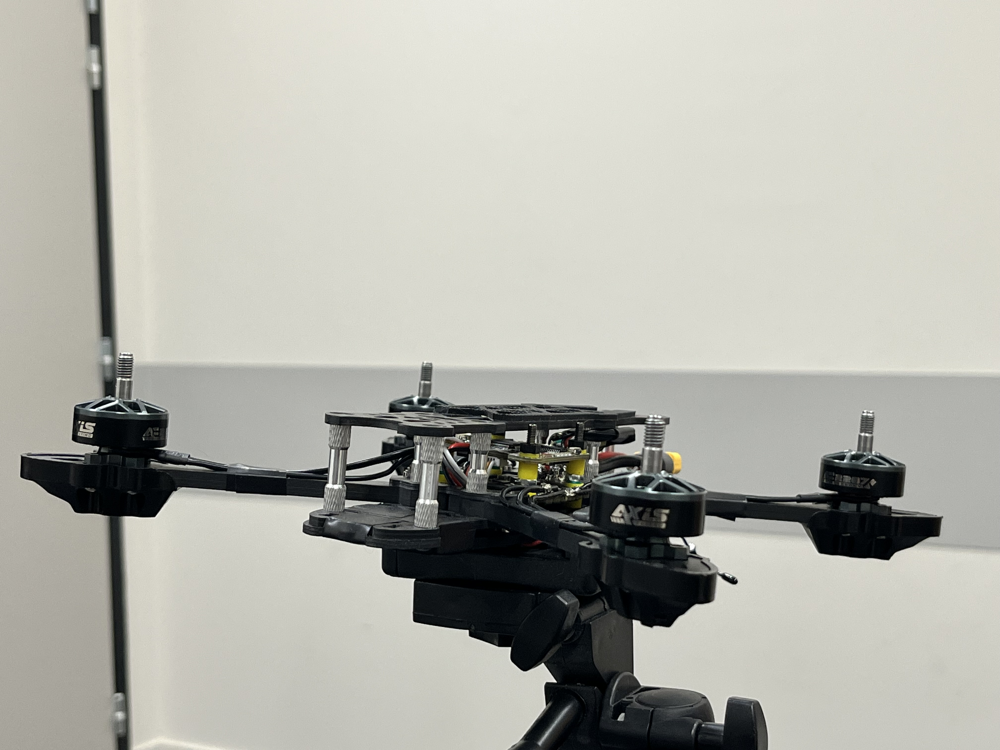
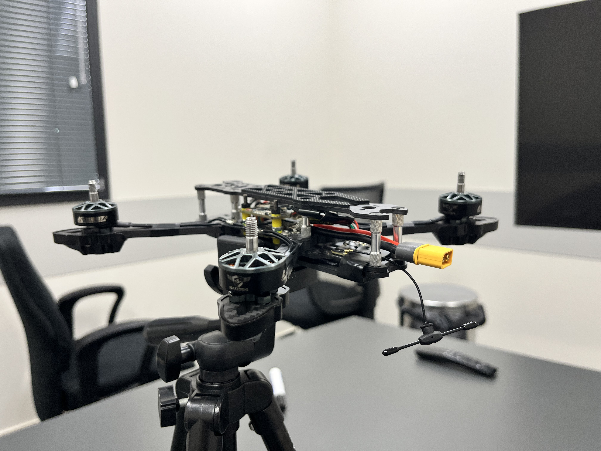
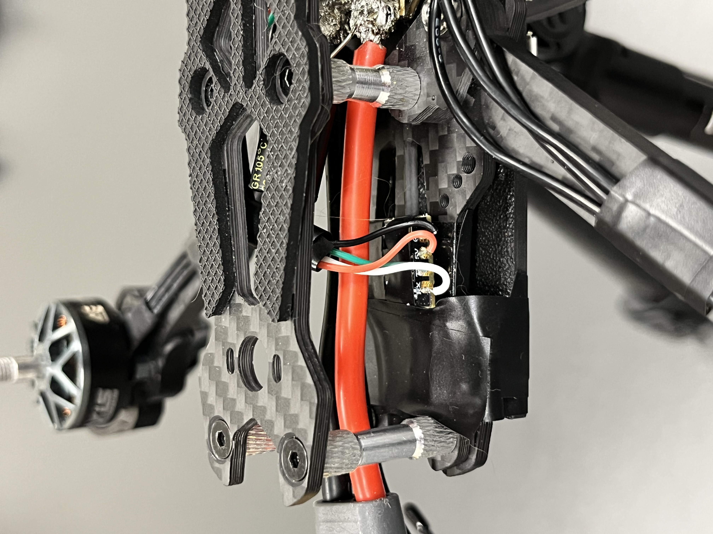

Gallery
A visual journey through the making of The Watcher — from raw parts to flying prototype.
Real images from the workshop — hardware, testing, and iteration in progress.






First iteration of the 250mm frame. Motor and ESC selection, initial wiring harness built and tested on the bench. ESC calibration and motor direction verified.
INAV flashed on the SpeedyBee F405 V3 stack. ELRS receiver bound, Multishot ESC protocol set, ARM switch and failsafes configured, MAVLink bridge ready.
GPS module on the way. Next up: waypoint navigation, position hold, and return-to-home — the drone flies its patrol without pilot input.
Real-time mission planning dashboard. Live telemetry, geofence editing, and mission replay. Currently in active development.
Onboard obstacle detection, visual tracking, and autonomous landing. This is what your Kickstarter backing unlocks.